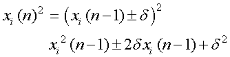
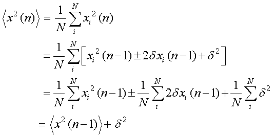
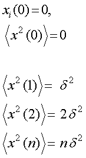

では，拡散の程度はどのようにして評価すればいいのでしょう？
平均では，左右の確率が等しいので，いつまでたっても平均は０．
でも，拡散のしやすさ，しにくさ，はありますね．
水の中にインクをたらしたときと，ハチミツの中とでは，広がり方が全然違いますね．
そこで，登場するのが，
自乗平均
なのです．
こうすれば，左右，＋－，で打ち消されていたものが，浮かび上がってきます．
さて，ｎ番目の粒子の位置は，

その自乗は，

となります．
この平均値は，

ですね．
第２項の先の平均値の求め方のように，０となります．
このような計算結果をさらに推し進めるためには，ｎ＝０の場合から，順に計算していき，規則性を見つけていくのが簡単です．

という規則性が見つかりますね．
次ページへ続く．．．．